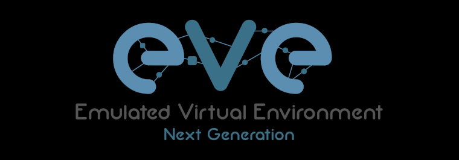
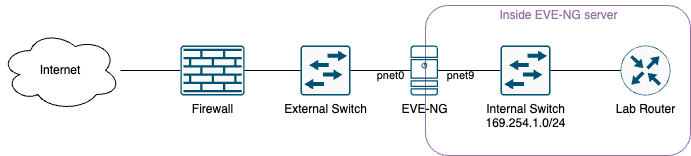
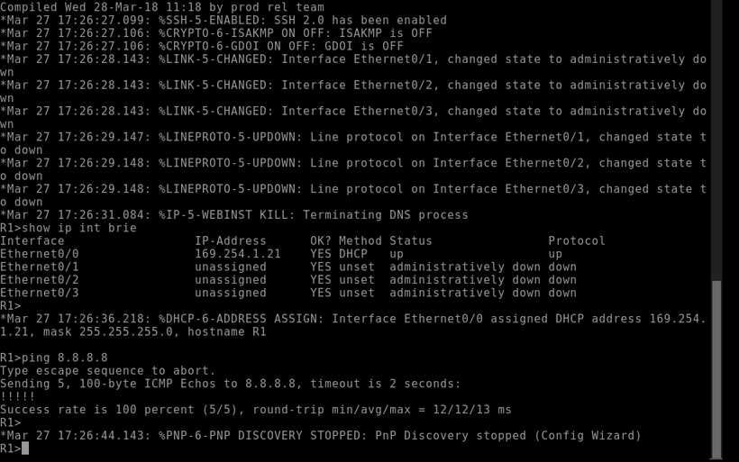
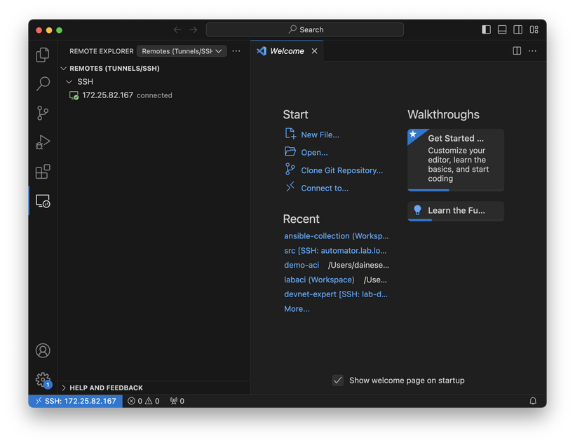
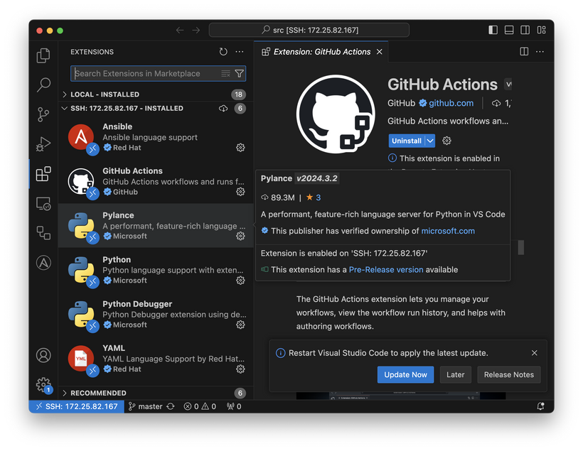

Customizing EVE-NG¶

Let's delve into the most important part: customizing EVE-NG for DevNetOps. In particular, we will proceed to:
- Configure an internal network dedicated to device management.
- Import the labs from the GitHub repository dedicated to DevNetOps courses.
- Compile and install Python 3.10 (not required in EVE-NG 6)
- Create a user dedicated to development, with a dedicated Pythonenvironment.
- Utilize Visual Studio Code for remote development on the EVE-NG server.
Configure an Internal Management Network¶
In automation, each lab we create requires a seemingly trivial yet essential characteristic: the IP addresses of the devices must be accessible from the automation system. If the EVE-NG PRO version has a native feature (NAT Cloud) that simplifies this, in EVE-NG CE, we need to find a strategy to achieve the same result.
The goal is to configure an additional network on EVE-NG that allows us to connect the management interfaces of the devices we will use for our labs, whether they are virtual (internal to EVE-NG) or physical (PLC and other external physical devices). The diagram below summarizes our intention:

Firstly, let's clarify the networking of EVE-NG and introduce some concepts in Linux in general.
A Linux system represents its network interfaces with various names, typically prefixed (eth, ens…) associated with an identifier number. Network interfaces can represent either a physical network card or a virtual network card. In our environment, we find that the physical network card is represented by eth0, but there are other network cards named pnet.
We can view the network interfaces of the system with one of the following commands:
The configured pnet interfaces are actually virtual switches (bridges) configured by default during installation:
$ brctl show
bridge name bridge id STP enabled interfaces
pnet0 8000.2ac1c946eac3 no eth0
pnet1 8000.000000000000 no
pnet2 8000.000000000000 no
pnet3 8000.000000000000 no
pnet4 8000.000000000000 no
pnet5 8000.000000000000 no
pnet6 8000.000000000000 no
pnet7 8000.000000000000 no
pnet8 8000.000000000000 no
pnet9 8000.000000000000 no
In particular, we see that the bridge pnet0 is associated with the physical interface eth0. Or, in other words, anything associated with the bridge pnet0 will also be transmitted on the eth0 network. As we'll see in the web interface, we can add Cloud networks. Cloud networks are simply the pnet bridges. In particular, the pnet0 network is also used for web access. In fact, the management IP address is associated with the bridge pnet0, as we can see using one of the following commands:
We can then configure an IP address on the pnet9 network and connect the management interfaces of the devices to the Cloud9 network.
EVE-NG, based on Ubuntu Linux Server 20.04 LTS, configures networks via the /etc/network/interfaces file. In particular, we need to configure the part related to the pnet9 bridge as follows:
# Cloud devices
auto pnet9
iface pnet9 inet static
address 169.254.1.1
netmask 255.255.255.0
bridge_ports none
bridge_stp off
We use the APIPA network, defined to be local. In this sense, in an Enterprise context, we have reasonable certainty of not overlapping with other networks. The remaining pnet2 - pnet9 interfaces can be deleted.
We can now reload the modified network configuration:
If we ever want to associate a physical interface with this bridge, we need to add the line:
For convenience, let's choose to assign IP addresses automatically to the network interfaces connected to the Cloud9 network. To do this, we use DHCP via Dnsmasq.
The configuration of Dnsmasq is done via the configuration file /etc/dnsmasq.conf. In particular, we want to have only the DHCP service active and only for the network managed by the pnet9 interface. The configuration is therefore:
Upon completion, restart the service with:
As we'll see later for the automation part, we need a stable association between the IP addresses of the devices and the devices themselves. We cannot rely on dynamic mapping provided by Dnsmasq, but we must define it statically. We can map the hostname that the device will present during the DHCP request and statically map it on Dnsmasq:
dhcp-host=SW1,169.254.1.101
dhcp-host=SW2,169.254.1.102
dhcp-host=SW3,169.254.1.103
dhcp-host=SW4,169.254.1.104
The list must obviously be completed with all the names we will use on this and future labs.
To complete our environment, the Cloud9 network must have access to the Internet. In other words, outbound traffic needs to be masqueraded (via NAT) using the IP address configured in the pnet0 interface.
We must first enable routing by modifying the file /etc/sysctl.conf:
Activate the setting by executing:
Configure NAT using IPTables to masquerade outbound traffic with the address of pnet0:
To save the changes, use:
Although not necessary, I recommend rebooting the system to ensure that everything is configured correctly.
Import Labs¶
Now let's download the labs and make them available directly on the EVE-NG server:
git clone https://github.com/dainok/courses /opt/courses
ln -s "/opt/courses/EVE-NG labs" "/opt/unetlab/labs/DevNetOps labs"
By accessing the web interface of EVE-NG, we should now be able to see the available labs. For example, let's open Simple Network Lab.unl, power on R1, and verify the IP address and connectivity to the Internet:

Now let's verify that we can access the node from the EVE-NG server (user dev) using the admin username and cisco password:
$ ssh admin@169.254.1.21
Unable to negotiate with 169.254.1.21 port 22: no matching key exchange method found. Their offer: diffie-hellman-group-exchange-sha1,diffie-hellman-group14-sha1
When accessing very old devices, there may be access problems caused by outdated ciphers. We can re-enable them by acting on the ~/.ssh/config file:
Ciphers +aes128-cbc
HostKeyAlgorithms +ssh-rsa
KexAlgorithms +diffie-hellman-group-exchange-sha1,diffie-hellman-group14-sha1
Host *
ServerAliveInterval 5
ServerAliveCountMax 3
At this point, we should be able to SSH into R1.
For completeness, the repository contains the complete dnsmasq.conf file with all reserved DHCP records used in future labs. If no customizations have been made, you can update the system's configuration:
Compile and Install Python 3.10¶
This step is not required on EVE-NG 6 because Python3.11 is available on Ubuntu Linux Server 22.04.
Ubuntu Linux Server 20.04 LTS, on which EVE-NG is based, comes with Python 3.8, which is too old to be used with recent versions of frameworks typically used for automation. The latest versions of Ansible, for example, require a higher version.
So let's proceed to download Python 3.10:
Unpack the file, compile the sources, and install the new version:
After completion, the new Python interpreter will be available at /usr/local/bin/python3.10.
Create a Development Environment¶
Now we can create a user dedicated to development:
We can also create a dedicated Python environment using the previously installed interpreter:
For convenience, let's configure the shell to load the Python environment upon new login. Add to the .profile file:
Finally, let's configure SSH authentication to occur via keys. From our desktop, copy our public key to the ~/.ssh/authorized_keys file:
Now we can connect to the EVE-NG server with the dev user without needing to enter the password. While we're at it, let's create a directory we'll use for development:
Use Visual Studio Code for Remote Development¶
To complete the configuration of our environment, we need to set up Visual Studio Code to develop remotely on the EVE-NG server using the dev user created earlier.
Start the instance of Visual Studio Code installed on our desktop, go to Extensions, and install the Remote - SSH plugin.
Add a new host by going to Remote Explorer → Remotes → SSH → ➕:
- Specify the command to connect to the host:
ssh dev@172.25.82.167 -A - Specify where to save the new host, typically in
.ssh/config
At this point, we should be able to connect to the EVE-NG server:

We can now enrich our development environment by installing the following plugins for remote use:
- Ansible by Red Hat
- Jinja by wholroyd
- GitHub Actions by GitHub
- HashiCorp Terraform by HashiCorp
- Jinja by wholroyd
- Pylance by Microsoft
- Python by Microsoft
- Terraform by Anton Kulikov
- TextFSM Template Syntax by andytruett
- YAML by Red Hat
